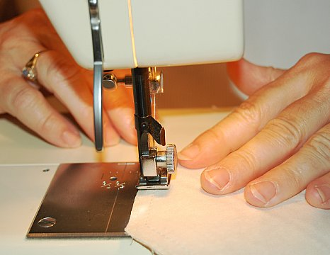

CossiePlay is a family-run business, operating in Hulkstown since 2012. We create outstanding custom-made costumes. Cosplayers can order any kind of costume - from simple Spiderman or elf costumes right up to costumes including advanced features like armour, animatronics, realistic weaponry and working force fields. Depending on the difficulty, costumes take between 1 and 50 weeks and cost between $10 and $10,000.
We buy and sell second-hand costumes (a price list is available) as well.
On the first Saturday of every month we hold a “CossiePlay Party” at the town hall. Entry is $15 for adults, $10 for ages 6-17 and kids under 6 are free. Each entry includes one non-alcoholic drink and a glow stick. Parties start at 6pm and run until 11pm. There is always a live DJ at the party (who takes requests) and dancing is common (but not required)

https://en.wikipedia.org/wiki/Cosplay (Wikipedia entry for cosplay)
http://www.cosplay.com - world largest cosplay community
cosplaytutorial.com/index.php – resource for costumers